NAVIGATION
TOP of Page
MAIN Page
HOME Page
PREV Page
NEXT Page
ON THIS PAGE
MAP
ABOUT
MURRAY TOWNS
Howlong
Corowa
Collendina
Mulwala
CENTRAL TOWNS
Redlands
Hopefield
Ringwood
Balldale
Lowesdale
Rennie
Savernake
NORTHERN TOWNS
Coreen
Daysdale
Oaklands
Rand
Urana
Urana Lake
Boree Creek
Morundah
RIVERINA AREAS
Albury-Wodonga
Federation Council
Berrigan Shire
North-West
Campaspe Shire
Moira Shire
Shepparton G.C.
Benalla R.C.
Indigo Shire
Silos & Waterways
|
MAP
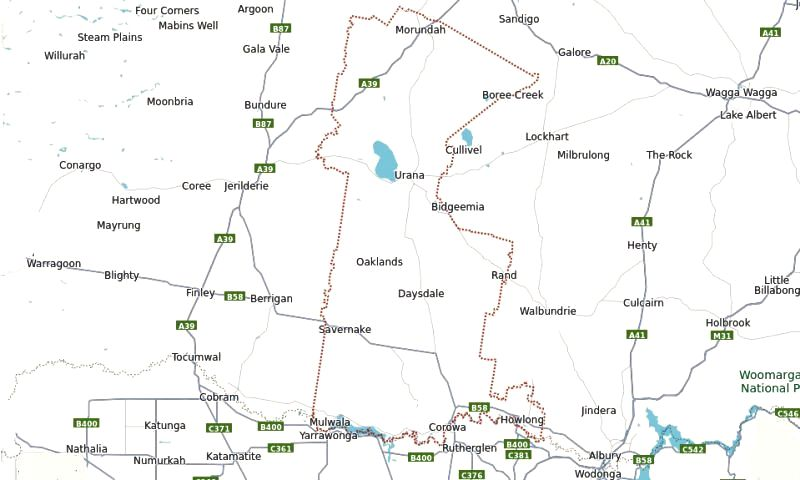
Map Of The Federation Council
ABOUT
Federation Council is a LGA formed in 2016 from the merger of the Corowa Shire with Urana
Shire. The council comprises an area of 5,685 square km and covers the urban areas of Corowa
and Mulwala plus the surrounding cropping and pastoral region to the north. It is bounded to the
south by the Murray River and the state of Victoria. At the time of its establishment the council had
an estimated population of 12,602.
In addition to the main urban centres of Corowa, Urana and Mulwala, localities in the area include
Balldale, Boree Creek, Buraja, Coreen, Daysdale, Hopefield, Howlong, Lowesdale, Morundah,
Oaklands, Rand, Rennie and Savernake. The Federation Council has a number of heritage-listed
sites, including Corowa Courthouse, Corowa railway station, Corowa Flour Mill, Savernake Station
and Urana Soldiers' Memorial Hall. Morundah presents Opera in the Morundah Paradise Theatre.
TOP
MAIN
HOME
PREV
NEXT
MURRAY RIVER TOWNS
Howlong, NSW has a population of 2,997 with historic buildings sprinkled throughout the town. It
services the smaller villages of the area such as Brocklesby, Walbundrie & Chiltern. Howlong’s
History Trail provides a perfect way to discover this riverside town. Starting at the Howlong Hovell
Tree, the trail spans 13.3 kilometres and covers 28 significant locations in the area. However, for
those requiring a shorter stroll, Howlong has a unique garden that is open to the public and
inspired by the distinctive and ancient gardens found in the City of Suzhou, in Eastern China.
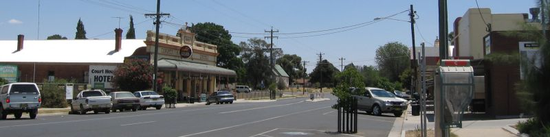
Howlong on Hawkins Street/Riverina Highway
(c) Mattinbgn - Own work, CC BY-SA 3.0,
https://commons.wikimedia.org/w/index.php?curid=1617242
TOP
MAIN
HOME
PREV
NEXT
Corowa, NSW has a population of 5,595 and is the largest town in the Federation Council and was
previously the administrative centre of the former Corowa Shire.
The Whisky and Chocolate Factory at 20-24 Steel Street is a renovated 1920s flour mill. Sample
organic chocolate and licorice products made from the sister company Junee Licorice and
Chocolate Factory. Indulge in the restaurant with gourmet meals and you can't leave without trying
the hot chocolates made from real melted chocolate! Tour the whisky distillery, witnessing the
makings of high quality Australian whisky.
The Federation Museum is at 56 Queen Street. Discover Corowa's history and its role in the birth
of Federation Australia. Museum displays include: reason for Australia becoming a federation and
Corowa's involvement; Dr John Quick's role in the federation; local Aboriginal artefacts; Tommy
McRae sketches; horse drawn vehicles and saddlery as well as locally manufactured agricultural
implements.
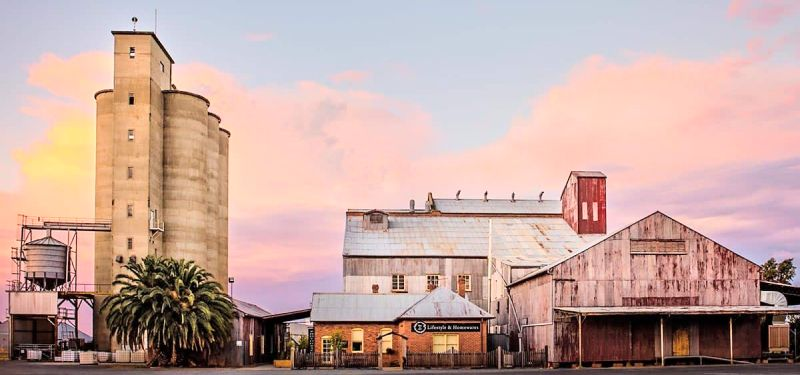
Corowa Distillery and Chocolate Factory at 20-24 Steel Street
TOP
MAIN
HOME
PREV
NEXT
Collendina, NSW is a locality with a population of 107.
Collendina Homestead is a historic 1891 30 room homestead on a 1,267 ha cattle and grain
property, being one of the original holdings on the upper reaches of the Murray River in NSW.
Located 19 km west of Corowa, Collendina Station has an extensive frontage to the Murray River.
At its peak, Collendina stretched across 18,000 ha and was first taken up by Robert Brown in 1841.
Tom Roberts, a founder of the Heidelberg School, painted and sketched members of the Hay family
while at Collendina Station. In 1889-1890 Roberts' famous painting Shearing the Rams was painted
at Corowa from sketches and drawings he made in the shearing shed of nearby Brocklesby Station.
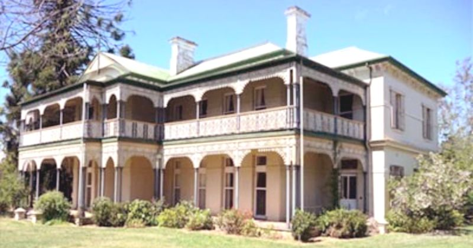
Collendina Homestead
Collendina Campgrounds in Murray Valley Regional Park. There are no camping fees but a $6
booking fee applies. Bookings are required. Book online or call 1300 072 757. There are no rubbish
collection points. Please take all rubbish when you leave.
Fryers Lane campground is around 15 minutes west of Corowa. Follow Spring Drive for 13km west
towards Mulwala. Turn left onto Fryers Road and follow the unsealed road down to the lagoon and
campground.
Jacobs campground is around 20 mins west of Corowa. Follow Spring Drive for 18km west towards
Mulwala. Turn left onto Jacobs reserve Road and follow the unsealed road for 500m until you get to
the Murray River. There are 4 campsites within this campground.
Mulwala, NSW is situated on Lake Mulwala, an artificial lake formed by the damming of the
Murray River. Across the border is Mulwala's twin town of Yarrawonga, VIC. Mulwala has a
population of 2,557 and is a popular destination for water sports and fishing.
Other popular attractions include three major licensed clubs including the vast Club Mulwala
featuring accommodation and mounted WW-II military hardware including guns, tanks and a DC-3
aircraft on display. The major industry in Mulwala is the explosives factory, constructed over
1942–43. It is now operated by French company Thales but remains an Australian Department of
Defence asset.
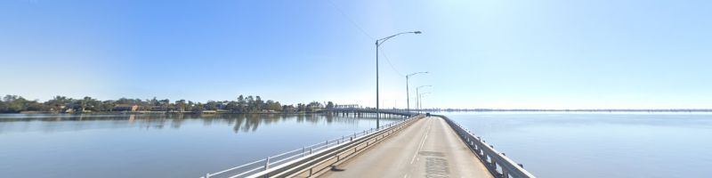
Lake Mulwala, Crossing the Yarrawonga-Mulwala Bridge
TOP
MAIN
HOME
PREV
NEXT
CENTRAL TOWNS
Hopefield, NSW is a rural community, situated 12 km south west of Balldale and 12 km north east
of Corowa. It has a population of 308. Hopefield Post Office opened on 1 October 1882 and closed
in 1954. In 1915, the brick Hopefield Hotel was built near the Railway Station. In 1946 it was
completely destroyed by fire.
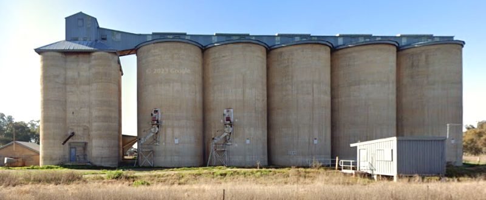
Hopefield Graincorp Silos on Hopefield Road
Balldale, NSW is a village with a population of 168 about 15 km north-east of Corowa and 18 km
west of Brocklesby. Balldale was established when the large farm holding of the Quat Quatta Estate
was sub-divided in the early 1900s and named in honour of local politician Richard Ball
(1857–1937). Balldale Post Office opened on 1 June 1905 and Balldale Hotel was built in 1905.
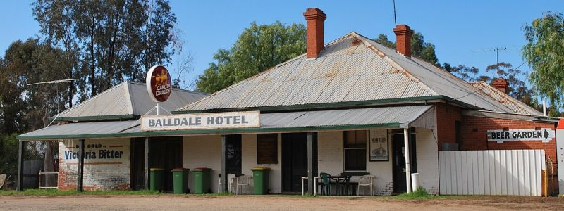
Balldale Hotel
By Mattinbgn - Own work, CC BY-SA 3.0,
https://commons.wikimedia.org/w/index.php?curid=6678161
TOP
MAIN
HOME
PREV
NEXT
Lowesdale-Buraja, NSW Lowesdale is a rural community with a population of 100 situated 92 km
east of Berrigan. Lowesdale Post Office opened on 1 August 1876 and closed in 1994. The Burrajaa
Hotel is now in private residential ownership. The name Lowes (Lowesdale) was taken from one of
the owners of ‘Buraja Station,’ a local farm. The small town of Burrajaa or Burryjaa or Burryja, was
spelt in a variety of ways in various newspapers between 1900 and 1950, with the most recent
spelling of the town being settled as "Buraja".
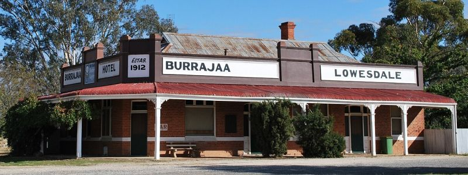
Burrajaa Hotel, now closed, on the Riverina Highway at Lowesdale
Rennie, NSW is a town community with a population of 43 about 10 km south of Savernake and
19 km north of Mulwala. Rennie was served by a broad gauge branch of the Victorian Railways which
extends to Oaklands, NSW and has been converted to standard gauge to meet the North East
Railway.
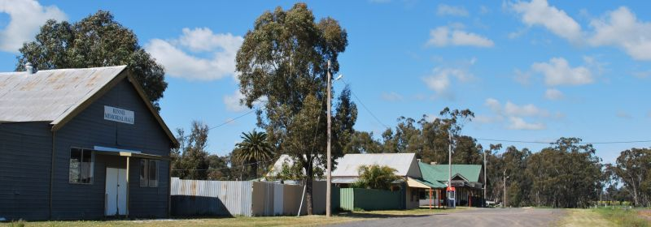
Memorial Hall and Hotel on Bull Plain Road, Rennie
(c) By Mattinbgn - Own work, CC BY-SA 3.0,
https://commons.wikimedia.org/w/index.php?curid=13081031
TOP
MAIN
HOME
PREV
NEXT
Savernake, NSW is a village and rural community with a population of 94. The village consists of
a hall, primary school, a now abandoned shop and a few houses. The hall is used from time to time
by the HotHouse theatre group, based in Albury-Wodonga, for small touring theatrical productions.
The main agricultural products of the area include sheep (for meat and wool), beef cattle, dryland
cropping and pig production as well as some irrigated rice production.
The Savernake area has been part of a CSIRO project to understand the role of remnant woodlands
in agricultural landscapes.The Savernake School of the Arts Hall holds events throughout the year
for the community. Savernake has a number of heritage-listed sites, including:2341 Mulwala Road:
Savernake Station
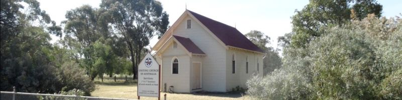
Savernake Uniting Church on the Riverina Highway
TOP
MAIN
HOME
PREV
NEXT
NORTHERN TOWNS
Coreen, NSW has a population of 122 and is located just past the turn off to Berrigan along the
Riverina Highway.
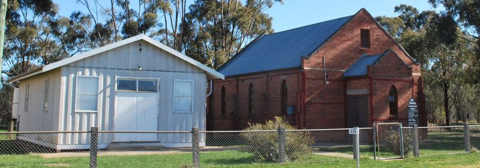
Coreen Presbyterian Church and Hall
(c) By Mattinbgn - Own work, CC BY-SA 3.0,
https://commons.wikimedia.org/w/index.php?curid=7281775)
Daysdale, NSW has a population of 83 and is a service town for the local farming community.
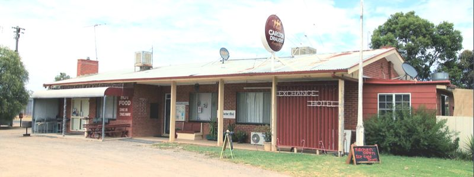
Daysdale Hotel
TOP
MAIN
HOME
PREV
NEXT
Oaklands, NSW has a population of 304 and has a Hotel, a Bowling Club, a Swimming Pool, a
School from kindergarten to year 12 with a day-care centre. The major industry in the Oaklands
region is agriculture, including the production of wheat and rice and is a major grain handling
area. It is the home of the Oaklands Diuris, a threatened native orchid that is only found in the
Oaklands region.
A standard gauge branch line from the New South Wales Government Railways Main South line at
The Rock was extended from Lockhart to Oaklands in 1912. A broad gauge branch line from the
Victorian Railways North East line at Benalla was extended from Yarrawonga to Oaklands in 1938,
creating a break-of-gauge until the New South Wales line was closed south of Boree Creek.
There are several stations between Yarrawonga and Oaklands. With the conversion of the North
East railway to Albury to standard gauge in 2008, the Oaklands branch railway was for a time a
gauge orphan. After much lobbying, the 113 kilometres (70 mi) branch was converted to 1,435mm.
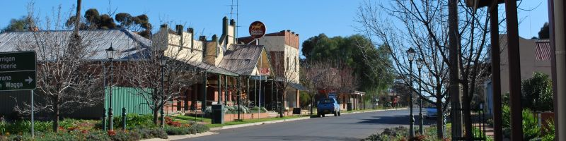
Oaklands, Millthorpe Street
(c) By Mattinbgn - Own work, CC BY-SA 3.0,
https://commons.wikimedia.org/w/index.php?curid=7287009
Rand, NSW has a population of 575. It was formerly the terminus of the Rand railway line from
Henty, which opened in 1920 and closed in 1975. Rand Post Office opened on 1 January 1926. Just
1.6 km south of town at the Byrnedale Road turnoff from the Four Corners Road is a historical
marker with a tall flag, commemorating locals who fought in World War 2.
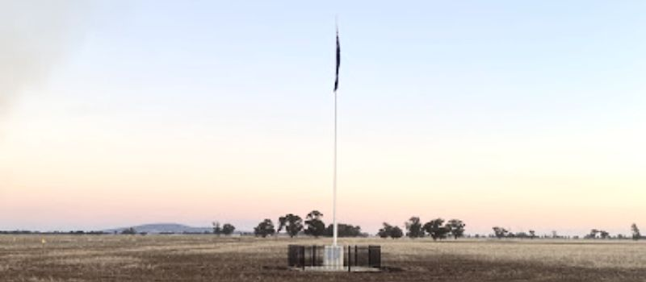
Rand Memorial on the corner of Byrnedale and Four Corners Roads at Rand
(c) Bunty Driver
TOP
MAIN
HOME
PREV
NEXT
Urana, NSW is a small service centre between Lockhart and Jerilderie. While it meets the needs of
surrounding wool and wheat graziers, it also has some real treasures: a huge Soldiers Memorial
Hall which is probably the largest in Australia, a fascinating Court House preserved from the late
19th century and some eccentric sculptures.
Urana Court House Museum is located at 13 William Street and is open by appointment. It is
open on Mondays and Tuesdays with hours varying. Tel: (02) 6930 9100 for opening details. The
museum still contains the court's original furnishings and Coat of Arms which dates from the
1880s. There is also displays of local memorabilia. Most of the court furniture remains, including
lovely cedar tables, cupboards and public benches. There is also a charge book from the 1860s.
The Big Spider is on the local water tower where, Andrew Whitehead, a council worker and
budding artist, has fashioned a huge black spider out of bits of old piping and tubing. It
acknowledges the local Urana football team which, until the 1980s, were known as The Spiders.
Soldiers Memorial Hall is thought to be the largest Soldiers Memorial Hall in Australia. It was
built in 1923 to commemorate the soldiers who fought and died in World War I. It is a building out
of all proportion to the town.
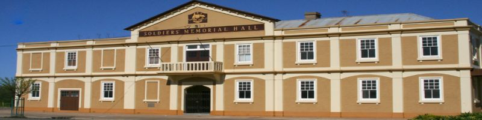
Urana Soldiers Memorial Hall, corner Osborne and Anna Street
Urana Dexter Horizontal Turbine Horizontal Windmills have vanes that are mounted in a drum
shape that turns on a vertical axis rather than on a horizontal hub like a propeller. In 1868, Albert
H. Southwick of Oskaloosa, Iowa, USA patented his design which became known as the Dexter
Horizontal Windmill. Then around 1885, Sir Samuel McCaughey (famous pastoralist, politician and
pioneer of the Murrumbidgee Irrigation Area) imported a Dexter kit and erected the windmill on
‘Coonong’ Station, to the west of Urana.
The Dexter stood for over 100 years at ‘Coonong’ before being seriously damaged in a bushfire in
the 1990’s. In 1999 the current owners of ‘Coonong’ Station – the Holt family – gifted the remnants
of the Dexter to the Urana Progress Association, and a small team of enthusiasts commenced it
reconstruction. Eventually, the restored windmill was transported to Urana for re-erection opposite
the Aquatic Reserve on Federation Way. It was officially opened to the Public in a ceremony on the
morning of 21 June 2023.
The upper storey of the Dexter houses the rotor that consists of a novel arrangement of an inner
fixed circle of vanes surrounded by an outer circle of pivoting shutters operated by rods to optimize
capture of the wind. Only four Dexters were brought to Australia. The Urana Dexter Horizontal
Windmill is extremely rare, and is believed to be the only surviving example worldwide.
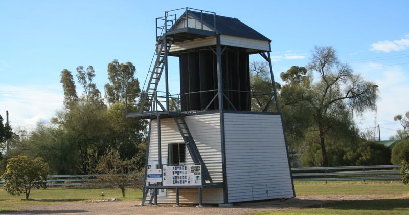
Dexter Horizontal Windmill Reconstruction, Federation Way, Urana
TOP
MAIN
HOME
PREV
NEXT
Lake Urana Nature Reserve is a salt lake located 10 km west on the shore of Lake Urana. It is an
intermittent lake filled by flood flows on average every ten to twenty years. The reserve has an
area of 302 ha and was dedicated in 1996. It is home to one of the few remaining stands of yellow
box in the Riverina. The lake's Aboriginal history dates back 25-30,000 years ago with burials,
grinding dishes and ovens being found in the lunette on the eastern side of the lake.
The reserve is an important area of remnant habitat for native animals of the western slopes and
plains, particularly for birds, of which 37 species have been observed including the red-rumped
parrot, brown treecreeper, striated pardalote, spiny-cheeked honeyeater, striped honeyeater,
grey-crowned babbler and when the lake is flooded, waterbirds such as wood ducks, Pacific black
duck, Australian grey teal, yellow-billed spoonbill, black-fronted dotterel and magpie lark.
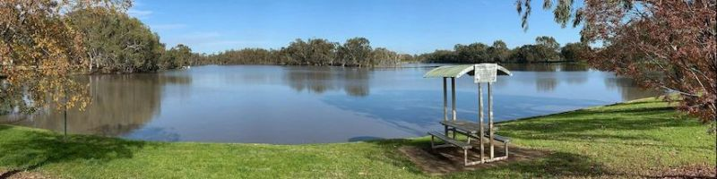
Lake Urana Nature Reserve
TOP
MAIN
HOME
PREV
NEXT
Boree Creek Boree Creek has a population of 64. It is most famous for being the home town of
former deputy prime minister Tim Fischer. At times when Fischer was acting as prime minister, his
property at Boree Creek became the "seat of power" of Australia. Boree Creek is the last operating
section of the mostly closed railway to Oaklands. Seasonal grain trains service the silos, the station
closed to passenger services in 1975 and little trace remains.
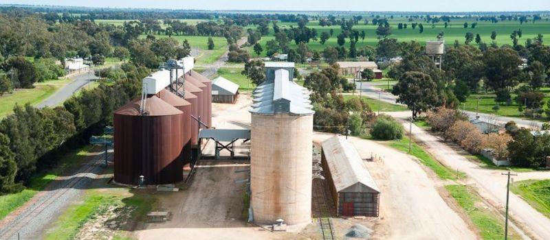
Boree Creek Silos
TOP
MAIN
HOME
PREV
NEXT
Morundah has a population of 24, is located on the Newell Highway between Jerilderie and Narrandera and consists of a hotel, some
silos, a few houses and an Opera House - the Morundah Paradise Theatre.
Morundah Paradise Theatre is notable for its recent tradition of hosting opera performances,
including the touring arm of Opera Australia, OzOpera's performance of Carmen in 2006 and the
performance of Cosi fan tutte by the Victorian Opera in 2007.
In 2012, Co-Opera's performance of Die Fledermaus was very well received. In 2016, the old
"opera house" - basically a prefabricated pig shed - was demolished and replaced by a larger
permanent structure, designed to cater for not only opera, but a range of other types of events.
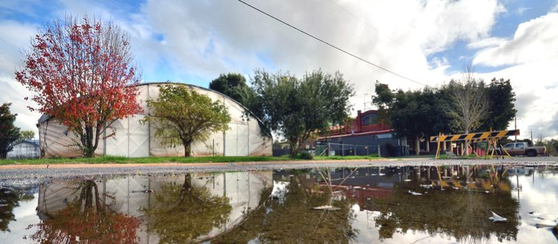
Morundah Paradise Theatre
(c) By Mattinbgn - Own work, CC BY-SA 3.0,
https://commons.wikimedia.org/w/index.php?curid=10299868)
Link to Theatre
TOP
MAIN
HOME
PREV
NEXT
|